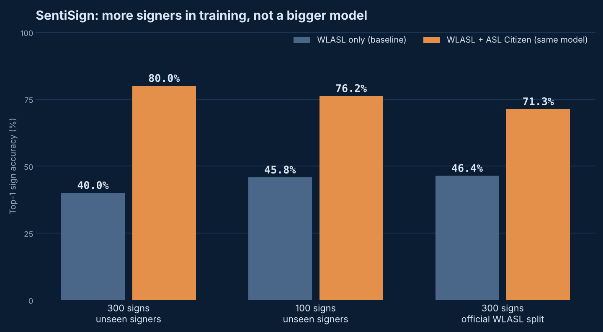

SentiSign
Live demoSign language to emotion-aware speech, in the browser. It watches a signer through a webcam, recognises isolated ASL signs, reads the facial expression, writes a natural English sentence and speaks it in a voice that matches the emotion.
Sign and emotion recognition run in the browser, so video never leaves the device. Only the recognised words and the emotion label go to a small server for sentence writing and speech. Adding the ASL Citizen dataset doubled accuracy on unseen signers with the same model.
Honest limit: continuous signing is unsolved (about half the words in a stitched sentence are wrong), so the app expects a short pause between signs.
Runs on a free shared GPU that sleeps when idle. The first load can take about a minute.

Tap any stage to see what it does, or run the signal.